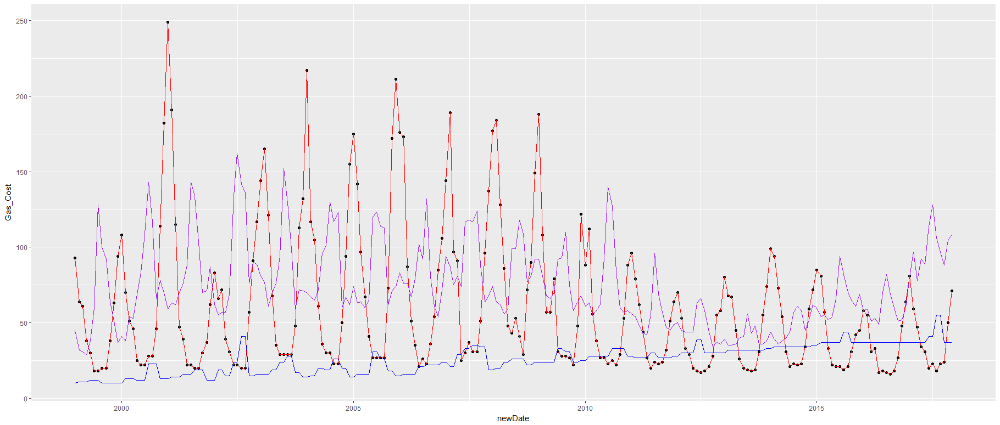

As we can see in this graph, as the temperature increases, the amount of gas consumed goes down. Presumable because one has no need of burning gas during the summertime.

When the temperature is hotter, presumably in the summertime, the amount of water consumed goes up. This could possibly be because the person consuming the water used it in a garden.

There is a clear correlation between temperature and electricity consumption, because during hotter times, one generally turns on the air conditioner.

Here we can see an interesting inverse relationship between the electricity and gas consumption. In the summer the gas consumption is low and the energy consumption is high, and vice versa is true for the winter. Interestingly, the amount of gas consumption decreases rapidly in the years following 2010 for some unknown reason.